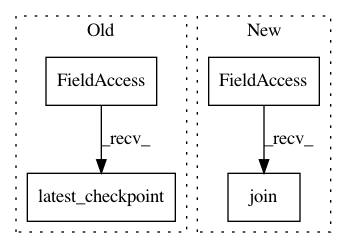

d63da42093649a3f18c286bc9044bacc978055b3,magenta/models/coconet/lib_tfsampling.py,CoconetSampleGraph,instantiate_sess_and_restore_checkpoint,#CoconetSampleGraph#,189
Before Change
self.build_sample_graph()
sess = tf.Session()
saver = tf.train.Saver()
chkpt_fpath = tf.train.latest_checkpoint(self.chkpt_path)
tf.logging.info("loading checkpoint %s", chkpt_fpath)
saver.restore(sess, chkpt_fpath)
tf.get_variable_scope().reuse_variables()
self.sess = sess
After Change
sess = tf.Session()
saver = tf.train.Saver()
tf.logging.info("loading checkpoint from path %s", self.chkpt_path)
chkpt_fpath = os.path.join(self.chkpt_path, "best_model.ckpt")
saver.restore(sess, chkpt_fpath)
tf.get_variable_scope().reuse_variables()
self.sess = sess
return self.sess
In pattern: SUPERPATTERN
Frequency: 3
Non-data size: 4
Instances
Project Name: tensorflow/magenta
Commit Name: d63da42093649a3f18c286bc9044bacc978055b3
Time: 2021-03-29
Author: annahuang@google.com
File Name: magenta/models/coconet/lib_tfsampling.py
Class Name: CoconetSampleGraph
Method Name: instantiate_sess_and_restore_checkpoint
Project Name: salu133445/musegan
Commit Name: f4811d994f466d3d466efcb755eb1ebf08b02982
Time: 2018-10-24
Author: salu133445@citi.sinica.edu.tw
File Name: musegan/model.py
Class Name: Model
Method Name: load_latest
Project Name: dpressel/mead-baseline
Commit Name: 0f482aaa64ce263ec189f39d98828efe0efe3a9c
Time: 2018-12-08
Author: blester125@users.noreply.github.com
File Name: python/baseline/tf/seq2seq/train.py
Class Name: Seq2SeqTrainerTf
Method Name: recover_last_checkpoint